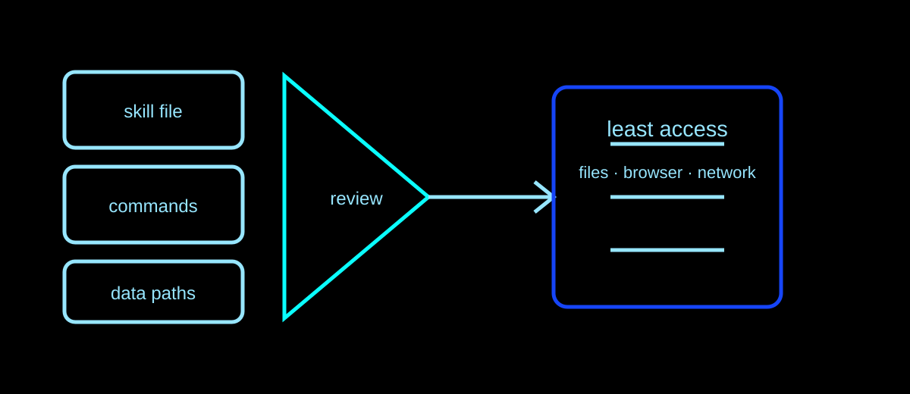

Skills discovery
Agent Skills Index: How to Use an AI Agent Skills Directory Safely
An agent-skills directory lowers the cost of finding candidate workflows. It cannot decide which skills should run with access to your files, browser, credentials, or network.
Published

Quick definition
Agent Skills Index is a public GitHub index that categorises repositories related to agent skills, context engineering, coding harnesses, and self-hosted tooling. It is an index of candidates, not a trust seal.
A five-minute vetting pass
Read the skill’s entry point before installing it. Identify every command it can call, every directory it reads or writes, every external service it contacts, and whether it needs browser cookies or tokens. Then inspect the repository’s license, releases, open issues, and security guidance.
Scope access to the smallest environment that will do the job. A research-only workflow should not receive permission to deploy, send messages, delete files, or expose a signed-in browser session. Keep an audit trail of what the skill changed.
Limits
Indexes can go stale, categories can be broad, and automated security labels require context. A prompt-only skill can still cause a risky action if its instructions persuade an agent to run an unsafe command.